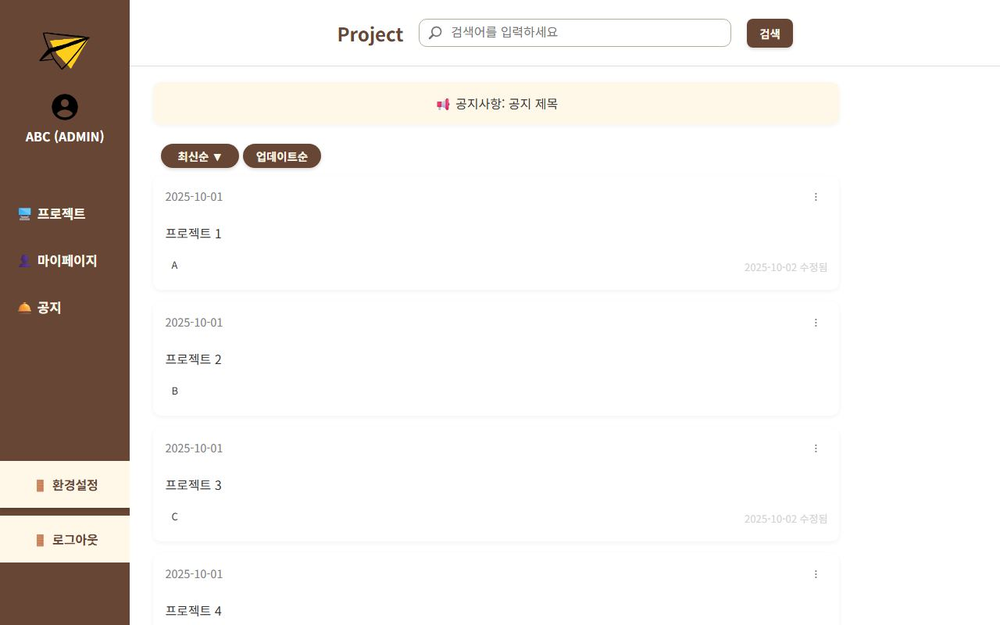
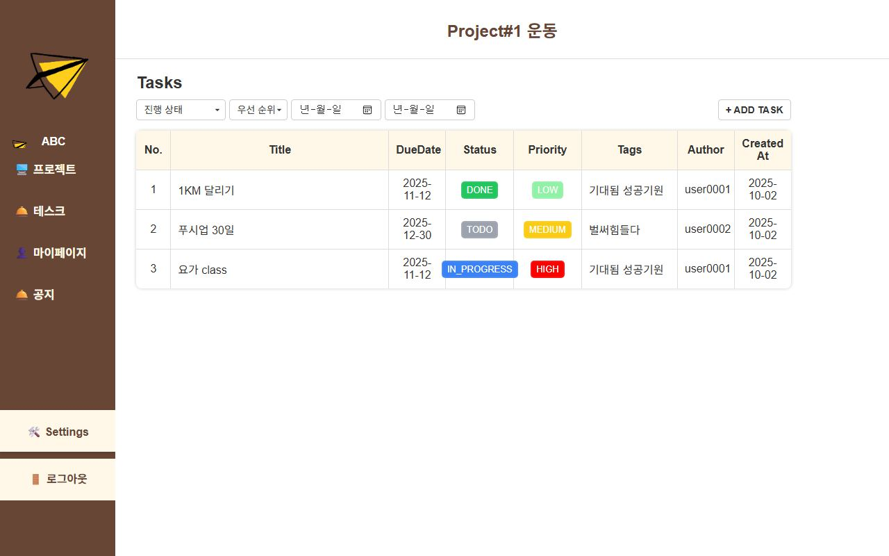
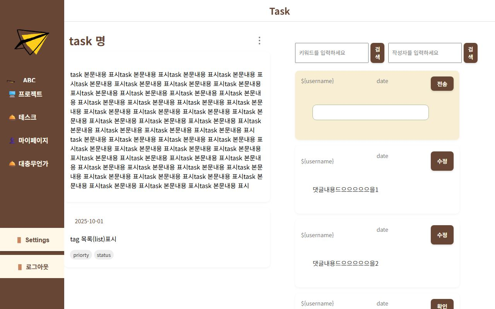
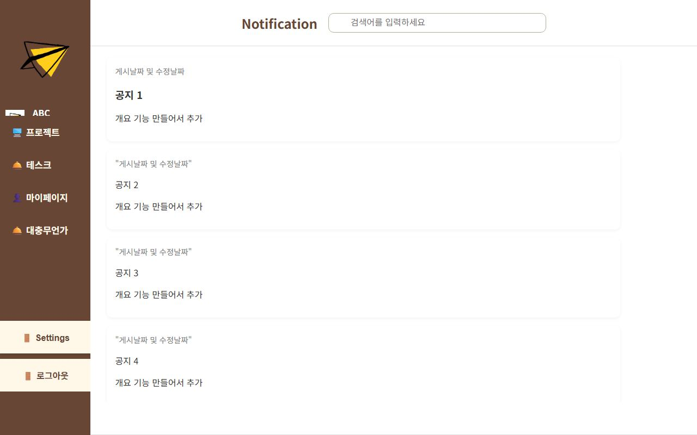
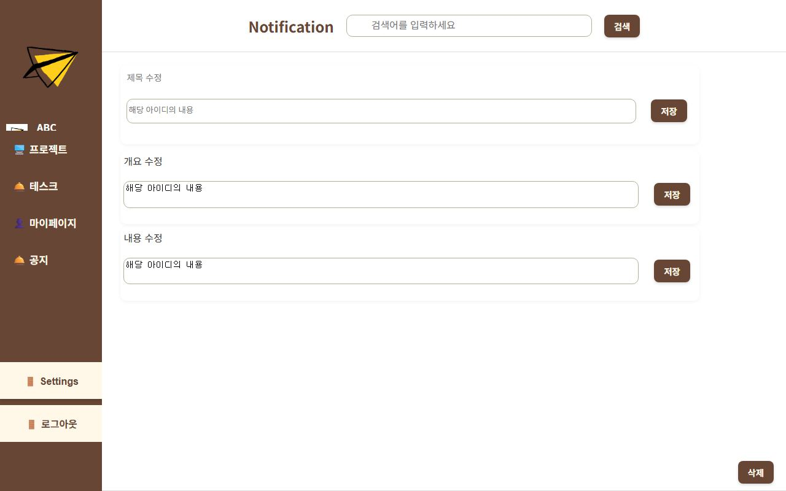
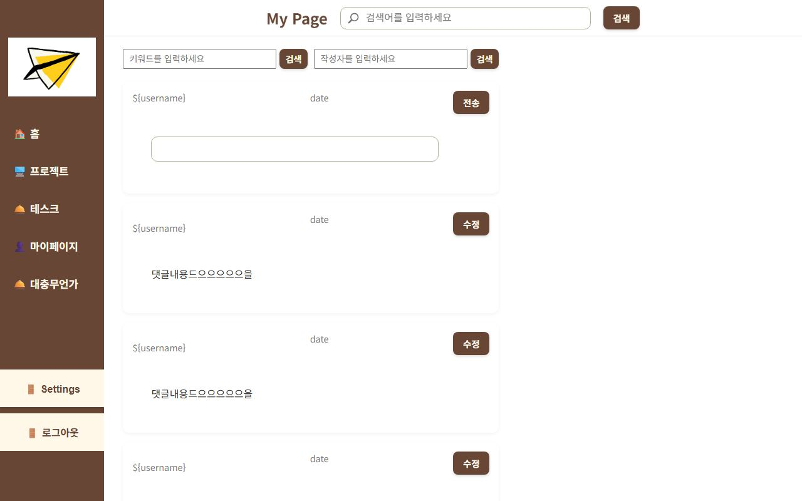
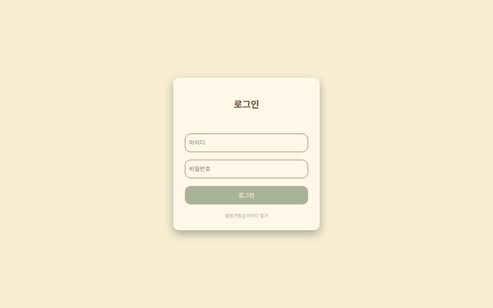
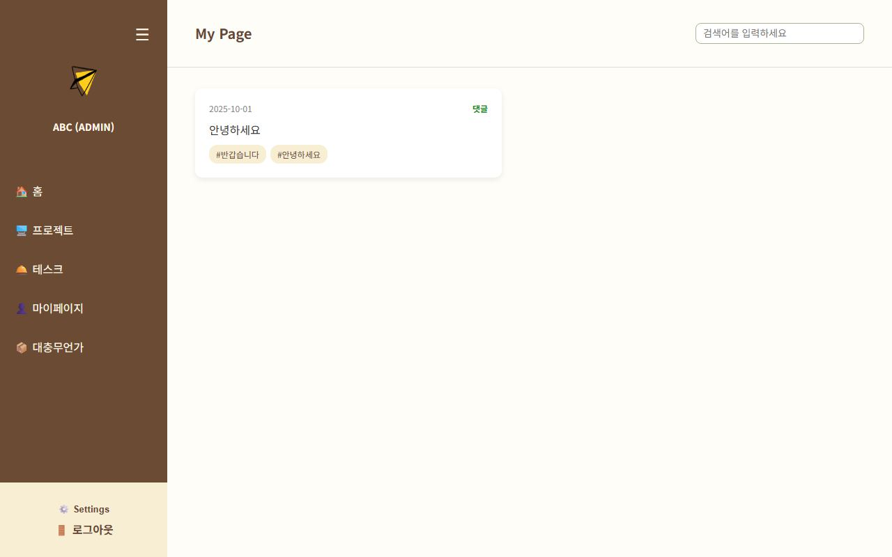

USER가 댓글을 쓸 수 없었다 (403)
원인 댓글 허용 규칙이 POST /api/v1/tasks/**(MANAGER · ADMIN) 규칙 뒤에 있었음. Spring Security는 처음 일치하는 규칙을 적용하므로 댓글 규칙은 영영 도달하지 않음.
해결 구체적인 경로 규칙을 일반 규칙보다 앞에 배치.
팀 프로젝트의 프로젝트 · 태스크 · 댓글 · 공지를 관리하는 REST API. ADMIN · MANAGER · USER 권한에 따라 할 수 있는 일이 달라지고, JWT로 인증합니다.
프론트엔드는 API 연동 전 단계의 정적 화면 시안입니다. 깨져 있던 경로 · 레이아웃을 고쳐 이 사이트에서 바로 열 수 있게 했습니다(사이드바 메뉴는 시안이라 동작하지 않으니 아래 바로가기를 이용하세요).








/tasks/{taskId}/comments)로 설계, 작성 · 내용 검색 · 작성자 검색 · 수정 · 삭제DateUtils를 응답 DTO에 적용해 시각을 KST 문자열과 UTC ISO 두 형태로 함께 내려, 프론트가 표시와 계산을 나눠 쓰도록 구성layout.css) · 사이드바, 공지 목록/작성 · 내 댓글 화면 시안git log 기준. 알림 · 댓글 관련 파일 커밋의 90% 이상이 본인. 인증(JWT) · 프로젝트 · 태스크 · 태그는 다른 팀원이 담당했습니다.
| 리소스 | USER | MANAGER | ADMIN |
|---|---|---|---|
| 프로젝트 · 태스크 조회 | ✔ | ✔ | ✔ |
| 프로젝트 · 태스크 생성/수정/삭제 | — | ✔ | ✔ |
| 댓글 작성 · 조회 | ✔ | ✔ | ✔ |
| 댓글 수정 | 본인 것만 | 본인 것만 | 본인 것만 |
| 댓글 삭제 | 본인 것만 | ✔ | ✔ |
| 공지 조회 | ✔ | ✔ | ✔ |
| 공지 작성 · 삭제 | — | — | ✔ |
댓글 행은 프로젝트 이후 보수로 실제 동작하게 된 규칙입니다 (아래 참고).
개인 fork에서 백엔드를 H2로 띄우고, 역할별 계정으로 API를 처음부터 끝까지 호출하는 스모크 테스트를 만들어 다시 검증했습니다. 내가 맡았던 댓글 영역에서 가장 큰 문제가 나왔습니다.
원인 댓글 허용 규칙이 POST /api/v1/tasks/**(MANAGER · ADMIN) 규칙 뒤에 있었음. Spring Security는 처음 일치하는 규칙을 적용하므로 댓글 규칙은 영영 도달하지 않음.
해결 구체적인 경로 규칙을 일반 규칙보다 앞에 배치.
원인 서비스에 작성자 확인이 없어, 막혀 있던 규칙을 열면 누구나 남의 댓글을 수정 · 삭제할 수 있는 상태.
해결 수정은 작성자 본인, 삭제는 작성자 또는 MANAGER/ADMIN. 다른 태스크 경로로 접근하면 400.
원인 전역 예외 처리기가 Spring Security가 아닌 java.nio.file.AccessDeniedException(파일 시스템 예외)을 import — 이름이 같은 다른 클래스라 컴파일은 통과.
해결 올바른 클래스로 교체해 403 응답. 필수 파라미터 누락도 500 → 400으로 정리.
원인 @PostConstruct에서 JVM 기본 시간대를 UTC로 바꿨는데, 데이터소스가 이미 만들어진 뒤라 LocalDate 저장 · 조회에 서로 다른 시간대가 적용.
해결 시간대 설정을 main()의 컨텍스트 시작 이전으로 이동.
원인 /css/... 루트 절대경로라 Live Server 루트에서만 동작. 사이드바 메뉴는 과한 패딩으로 한 글자씩 줄바꿈.
해결 38곳을 상대경로로 변환, 사이드바 CSS 수정, 중복 리스너의 잘못된 선택자(closest("#")) 제거.
스모크 테스트 15/15 통과 — 마감일 보존, 댓글 작성 · 본인/타인 수정 · 삭제 6종, 검색 3종, 정렬, 기존 권한 규칙 유지, 미인증 401. 테스트와 시드 SQL은 fork의 local-demo/에 포함했습니다.